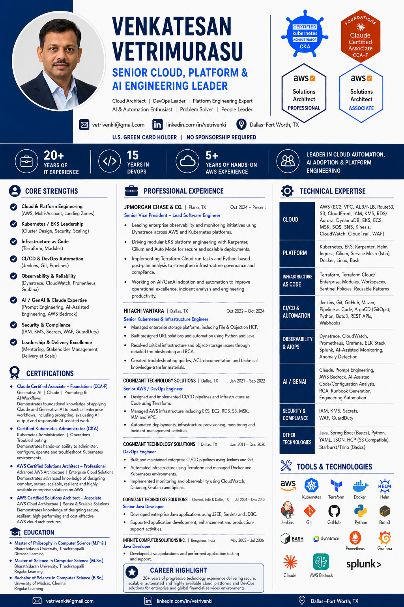

Platform strategy
Designing paved roads for cloud adoption, Kubernetes operations, infrastructure as code, and self-service delivery.
- AWS landing patterns
- EKS & Karpenter
- Terraform at scale
Enterprise Cloud · Platform Engineering · Applied AI
Technology leader with 20+ years turning complex infrastructure into secure, resilient platforms—and helping engineering teams move with confidence.
Availability, security, cost, and developer velocity must work as one system.
Leadership profile
I work where reliability, modernization, and organizational change meet—translating ambitious goals into platforms teams can operate every day.
Designing paved roads for cloud adoption, Kubernetes operations, infrastructure as code, and self-service delivery.
Building failure-aware systems with explicit trade-offs, practical runbooks, observable SLOs, and tested recovery paths.
Connecting enterprise AI ideas to secure delivery patterns, agent architecture, retrieval, evaluation, and guardrails.
Selected architecture work
A production-grade blueprint joining independent multi-AZ clusters, global traffic steering, Aurora Global Database, regional proxying, distributed caching, and automated recovery.
Operational patterns for private enterprise clusters, node lifecycle automation, ingress health, observability, and policy-driven infrastructure delivery.
A decision framework spanning standard RAG, hybrid retrieval, GraphRAG, caching, evaluation, security controls, and production failure handling.
Professional profile
Experience, certifications, and technical expertise at a glance.

{kind=link}